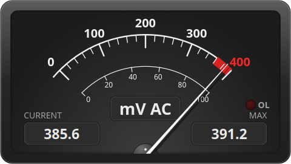

A readout that looks like an instrument, a recorder that behaves like a chart recorder — and a device list that saves you from guessing baud rates.

A procedurally drawn needle instrument in the style of a studio VU meter: dark or ivory face, mirrored‑scale ballistics on the needle, a red overrange zone and an OL lamp that lights when the meter reports overload.

Seven‑segment digits on a warm LCD‑green face with ghost segments, a 40‑segment bargraph and the annunciators you know from the meter itself: HOLD, AUTO/MANU, AC/DC, diode, continuity, REL.

Built on Qt Charts. Record a battery discharge over a weekend or a thermistor over a minute — the sample rate and window length are yours.

Picking a vendor and model fills in baud rate, parity, stop bits and the control lines the cable needs. Unknown meters: choose Manual settings and a protocol.
Run one QtDMM per meter. Instances find each other and can be started and stopped together, so voltage and current recordings line up. Computed values across instances (P = U·I) are in development.

The manual is embedded in the program (F1) and published at qtdmm.de/docs. Command‑line switches let you start connected, pick a port or load a CSV file at launch.
Interface languages: English, German; French, Spanish and Polish in progress.